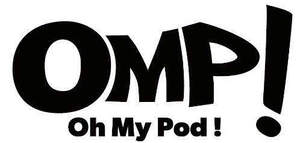

Trade Mark Journal No.2025/048 28 November 2025
UK00004275718 9 October 2025 (5,9,34)

International priority date claimed: 30 April 2025
(France)
(5143810)
- Class 5
- Pharmaceutical preparations namely e-liquids, nicotine bases and substitutes based on nicotine for electronic cigarettes ; Tobacco-free cigarettes for medical purposes; Liquid solutions containing food flavourings for medical purposes; Cannabidiol (CBD) extracts for medical use; Cannabigerol [CBG] extracts, For medical purposes; Cannabinol [CBN] extracts, For medical purposes; Sleeping oils, based on the following products: cannabidiol (CBD), Cannabigerol [CBG] or cannabinol [CBN]; Herbal teas for medicinal purposes; Medicinal infusions; Herbal teas for medicinal purposes; Dietetic foods adapted for medical purposes, Dietetic preparations and substances for medical use; Dietetic substances adapted for medical use; Nutritional supplement drink mixes for medicinal use; Mineral nutritional supplements; Food for medically restricted diets; Powdered nutritional supplement drink mix.
- Class 9
- Batteries for electronic cigarettes; Chargers for electronic cigarettes; Car adapters for electronic cigarettes; Electric and electronic parts for electronic cigarettes; Batteries for electronic cigarettes.
- Class 34
- Tobacco; Articles for use with tobacco; Alternative smokers' articles, namely electronic cigarettes, electronic shisha pipes, electronic smokers' pipes, electronic cigars, electronic cigarillos, electronic vaporizers; Optimised electronic cigarettes, most of the elements thereof being configurable; Electronic cigarette filters; Electronic cigarette atomizers; Sprayable solutions to be inhaled through electronic cigarettes; Electronic vaporisers; wicks for electronic cigarettes; Drip tips for electronic cigarettes; Electronic devices for nicotine inhalation, Namely refill cartridges for electronic cigarettes; Electronic cigarette cases; Tips for electronic cigarettes; Tips of yellow amber for cigar and cigarette holders; Nicotine-based substitutes for electronic cigarettes; Nicotine bases for electronic cigarettes; Tobacco substitutes, not for medical purposes; Liquid solutions for use in electronic cigarettes; Liquid solutions for use in electronic cigarettes based on the following products: Hemp, Cannabidiol, Cannabigerol or Cannabinol; Flavourings and flavouring essences for liquids for electronic cigarettes or personal vaporisers; Aromas for use in vaporisers; Scented cartridges for use with electronic devices replacing cigarettes, cigars, cigarillos and pipes, containing tobacco substitutes, not for medical purposes; Herbal molasses [tobacco substitutes]; Tobacco substitutes, namely: Cannabigerol resin, Cannabinol resin and Cannabidiol resin.
BIO CONCEPT
Representative: J P Mitchell Solicitors